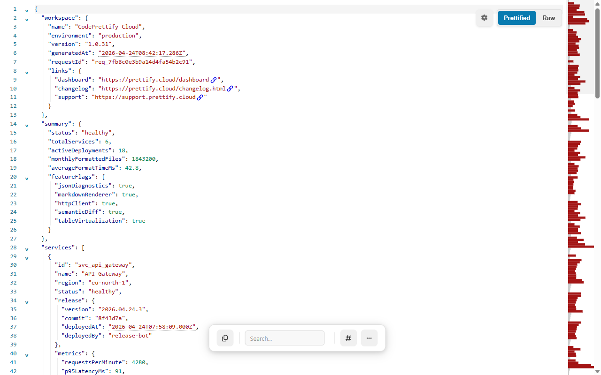
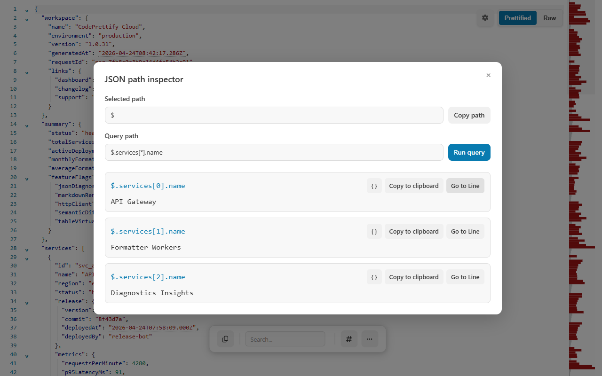
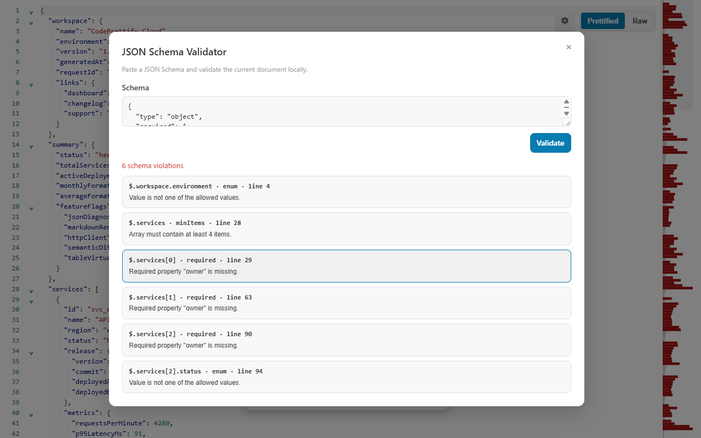

Open the JSON
Visit a raw JSON URL, open a local file from the launcher, or use the Windows app. The extension recognizes JSON by URL and HTTP content type.
CodePrettify formats raw API responses and local JSON files directly in the browser tab, then adds folding, search, JSONPath, schema validation, diagnostics, table view, comparison, conversion, and export without asking you to paste the payload into a remote formatter.

Formatting is the first step. The rest of the workflow helps you understand what the payload contains, verify it, and take the result into the next tool.
Visit a raw JSON URL, open a local file from the launcher, or use the Windows app. The extension recognizes JSON by URL and HTTP content type.
Fold nested objects, search values, jump by line, use the minimap, open Document Navigator, or switch an array into Table View.
Run a JSONPath query, validate against a pasted schema, compare another payload, convert formats, generate typed code, copy, or export.
CodePrettify preserves the data. It changes the presentation and layers useful tools around the exact document you opened.
A minified response hides the boundary between services, releases, metrics, and incident details.
{"services":[{"id":"svc_api_gateway","status":"healthy","metrics":{"p95LatencyMs":91,"errorRate":0.0008}},{"id":"svc_insights","status":"degraded","metrics":{"p95LatencyMs":144,"errorRate":0.0124}}]}Indentation, syntax color, folding, and line references make the same values easier to compare.
{
"services": [
{
"id": "svc_api_gateway",
"status": "healthy",
"metrics": {
"p95LatencyMs": 91,
"errorRate": 0.0008
}
}
]
}JSONPath extracts the values you care about. JSON Schema checks whether the current document follows the contract you expect. Both workflows stay attached to the open source document.

$.services[*].name returns three matching values with copy and Go to Line actions.
CodePrettify does not fetch remote schema references. Paste the schema you intend to trust, use local # references, and validate the current document in place.
No. Formatting, search, JSONPath, schema validation, comparison, conversion, and code generation are performed locally by the browser extension or Windows app.
Yes. The extension also recognizes supported response content types, so an API route can activate the JSON viewer without a file extension.
Yes. Drag a file onto the extension launcher or use its file picker. That workflow does not require general file:// access.
JSONC is supported separately from strict JSON, including common comment and trailing-comma patterns used by files such as tsconfig.json.
Install CodePrettify, open a JSON response, and keep the complete inspection workflow in the tab where the data already lives.